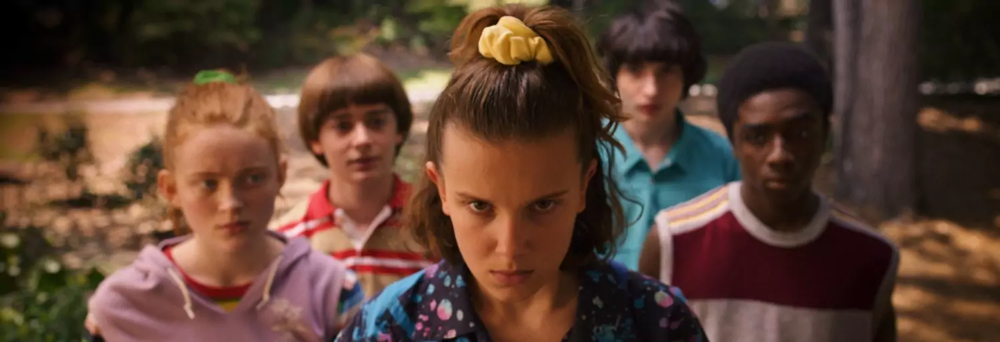

Eleven
Niña con habilidades psíquicas.

Stranger Things es una serie de ciencia ficción ambientada en los años 80, llena de misterio, aventura y elementos sobrenaturales.

La desaparición de un niño en la localidad de Hawkins desencadena una serie de acontecimientos relacionados con experimentos secretos y una dimensión paralela conocida como el Upside Down.
Niña con habilidades psíquicas.
Líder del grupo de amigos.

Inteligente y divertido.

Jefe de policía de Hawkins.